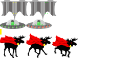

Moose Invaders
This site has been created to display my work for University
A Classic of all games has been reverse engineered and recreated in my own way in Canvas
Enjoy.
Mooses Vs Aliens
I have created a player (the super moose), the missiles (A lime and a Lemon), and the alien spaceships which will fire limes at the lemon dependant super moose.
The five versions of the moose are the different frames that will play when you run left or right as well as when you fire a huge lemon towards the aliens
The Alien Spaceships animate frame to frame with simple light colour changes as they move along the screen